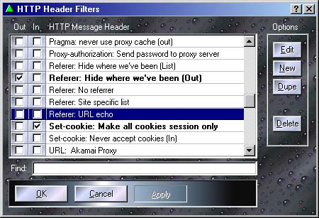

Here is where you can control how the Proxomitron edits the HTTP header messages that pass between your browser and the Internet. Click on an area to get an explanation of its function.

The mysterious HTTP Headers revealed...
HTTP Headers are messages sent between your browser and Internet web servers whenever you request a page. These messages contain all sorts of information - some necessary, some merely informational. This includes, among other things, the infamous "web cookies" you may of heard about. Normally these messages are never seen, but using the Proxomitron's Log Window, you can see what your browser has to say.
Headers come in two flavors - Request Headers are outgoing messages from your browser to the web server, while Reply Headers are incoming messages from the web server back to your browser. The log window shows these in different colors, green and yellow respectively. Headers can be arranged in any order and the same header may even appear twice (though this is unusual). Headers your browser or the web server doesn't understand are simply ignored.
Using the HTTP header filters, you can add, delete, or change these headers based on their content. To modify or create a filter use the HTTP Header Filter Editor.
Warning: Caution should always be used when modifying HTTP headers - sending incorrect data or deleting required headers can impair your browser's operation.
Committing URL-acide
One newly added header filter serves a special function. The "URL-Killer:" uses the new connection killer "\k" option to block unwanted URLs. When a URL match is made, the remote web server won't even be contacted. For image URLs the Proxomitron will return "killed.gif" (by default a blank, transparent .gif file) in place of the original image, for any other type of URL the Proxomitron simply sends the contents of "killed.html" instead. Both killed.gif and killed.html are located in the Proxomitron's program directory under "html" and can be changed to send whatever you wish.
Besides URLs, you can use the same trick to kill items based on other header content as well. Content-Length: and Content-Type: can often make good candidates. Note that for filters based on reply headers, the remote web server must first be contacted in order to get the information to test. Still, killing a reply will avoid loading the item's actual data.
File Sushi - How to fix broken MIME Content-Types
Web servers use the "Content-Type:" header to tell your browser what it's loading. A web page, for example, is "text/html" while a .jpeg file would be "image/jpeg". However, when a server isn't aware of a new or unusual media type, it usually defaults to "text/plain". Generally, this is bad because the browser, thinking it's reading a text file, can corrupt the data by gleefully adding extrainous CR/LF pairs where none should be - also known as "cooking" a file.
The Proxomitron can turn down the heat by assigning the correct content type to a "text/plain" file based on the URL's extention (which is what the web server should have done in the first place). The default filter set includes examples for JavaScript, MIDI and MP3 files (look for the "Content-Type" header filters) - use them as a basis for adding other media types.
Sharing your header filters
Right-clicking over the filter name area bring up a context menu allowing you to import or export selected filters to the clipboard. This is an easy way to share specific filters with others or add new filters yourself. For example, to share some filters, just select the filter(s) you wish, right-click to export them to the clipboard, then paste them into an email or message board. Exported filters will be in the same plain-text form used by the config file and can easily be imported by someone else. When sharing filters be sure not to delete any of the included headers or Proxomitron may not be able to import them again.
To import filters just, copy the text into the clipboard from the original source (which could be an email, message board, or any other text source) and select the import option. If Proxomitron can find enough text to make a new filter, it will be added to your list highlighted in red.
HTTP headers in their natural environment
For a complete list of what all Proxomitron's header filters do, go to the Default Header Filters section. On the other hand if you'd like to know a bit more about what these headers actually are, here's a mini-bestiary of some common HTTP headers what they do...
Request Headers
| If-Modified-Since: | This contains the date of the last time your web browser fetched this web page. Basically it says to the web server "only send me the page if it's been changed since this date". Deleting this header will force a web page to fully reload even if it's already in your browser's cache (with IE you'll also need to delete the "Last-Modified" header). |
| Referer: | This contains the URL of the web page you previously came from. For security reasons web browser are supposed to give you the option not to send this information, but few browsers do. It's usually safe to delete although it can have an odd effect on things like free web counters, which sometimes use it to track which web page they're keeping count of. If enabled for outgoing messages, Proxomitron's default Referer filter just sends a page its own URL here - sneaky no? |
| User-Agent: | This contains information about your web browser and usually your operating system as well. Normally, it's just informational - you can delete this header or even send your own information here if you like. |
| Host: | Contains the host name of the web page your contacting (as in "www.somewhere.com"). It commonly used by many web servers for "virtual hosting" where the same web server is used for several different sites. Generally leave this one alone. |
| Accept: | Contains a list of file and image type your browser understands. Another one you usually need not modify. |
| Accept-Language: | Contains a list of preferred languages - intended for allowing multi-lingual web pages the automatically choose your language (though seldom really used for this). This is another header that the original HTTP specs said should be under user control. Sometimes you may not wish everyone to know your native language. |
| Accept-Charset: | The character sets your browser understands. Generally best let alone. |
| Cookie: | This is perhaps one of the most infamous, and misunderstood of all headers. Cookies contain a line of information originally send by a web server to your browser. All your browser ever does with them is send them back to the server unchanged. Most often they contain some sort of user identification the server uses to tell you apart from other visitors, but the server has to know this information already through other means to create the cookie in the first place. By altering a cookie, you can really "mess with a server's head" so to speak and confuse it to who you really are. Depending on the situation, this can be a good or bad thing ;-). You can use the Proxomitron's cookie filter to stop all cookies from being sent, or by including a URL match, send cookies only to certain trusted sites. |
| Pragma: no-cache | Often sent by web browsers when a page is reloaded. It's intended to tell any remote proxy to send a fresh version of the page (instead of a copy it may have stored). The Proxomitron uses this to detect when a browser's "reload" button is pressed. |
Reply Headers
| Server: | Contains the Name and version of the web server. Simply informational and not used by your browser. Sort of the reverse of the "User-Agent" header. |
| Cache-control: | affect how pages are stored in your browser's cache. A value of "Private" indicated the contents should not be stored while "max-age" give an indication of how long the page should be kept (kinda like a "Use By" date on milk ;-). |
| Pragma: no-cache | In a reply, this Indicates that your web browser should not store the page in its cache. Often used for temporary web pages like search engine results. |
| Expires: | Another header used by your browser's cache - contains a date when the web page's contents will have probably changed. It usually is only speculative. |
| Date: | The web server's idea of the current date and time. |
| Last-Modified: | The date and time the web page was last modified. Also used by your browser's cache. For earlier versions of Internet Explorer, you may have to delete this header along with "If-Modified-Since" to "force" the browser to always reload a web page. |
| Content-Type: | Contains the type of data the server is sending, for example "text/html" is used for a web page and "image/gif" for a .GIF file. |
| Accept-Ranges: | Part of HTTP 1.1 - "Bytes" indicates a server supports retrieving arbitrary sections of a file. Used by some download utilities to "resume" an interrupted file transfer. |
| ETag: | A little like a checksum (but only very little). It contains a string that is supposed to change every time the web page is updated. The string has no real meaning other than that. Again something to be used by your browser's cache. |
| Connection: | Another HTTP 1.1 header - "close" indicates no more data will be send on this connection (as was always the case in HTTP 1.0). HTTP 1.1 supports the idea of "persistent connections" where the same connection is "reused" to send multiple items. By altering this header you can control Proxomiton's own use of persistent connections. For example, always sending "Conntection: close" will prevent persistent connections entirely. |
| Content-Location: | The URL where the data came from - not always present. |
| Location: | This is used by webservers to redirect you to a different URL (in a 302 Redirect reply). Proxomitron's $JUMP( ) command actually works by sending one of these to your browser. |
| Content-Length: | The length in bytes of the web page or file being sent. |
| Set-cookie: | A request to your browser to store the information contained in this header and send it back to this sever the next time you visit the web page. Delete this, and your browser will never receive any cookies. In the Set-Cookie filter, the URL match can be used to selectively accept cookies. Also Proxomitron can make cookies "session only" so they're not permenently stored by your browser. Often this will work better at places where killing the cookie altogether will cause a site to complain. |
 Return to main index
Return to main index